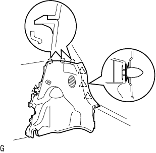

リヤシートベルト 取り付け |
| 1. リヤシート3ポイントタイプ ベルトASSY OUT LH取り付け |
ＥＬＲロック開始の傾斜角度点検
 |
リトラクタを取り付け状態から静かに動かしたとき、全方向に対してベルトのロックが15°以内でロックしないことを点検し、45°以上でロック状態を保持することを点検する。
ボルトで、リヤシート 3ポイントタイプ ベルトASSY OUT LH（リトラクタ部）を締め付ける。
ボルトで、リヤシート 3ポイントタイプ ベルトASSY OUT LH（ショルダアンカ部）を締め付ける。
ＥＬＲロック点検
車両取り付け状態において、すばやくシートベルトを引き出したとき、シートベルトがロックすることを点検する。
| 2. ルーフサイド ガーニッシュ INN LH取り付け |
| 3. デッキトリムサイド パネルASSY LH取り付け |
 |
クリップおよびツメをかん合させデツキトリムサイドパネルASSY LHを取り付ける。
| 4. リヤシート3ポイントタイプ ベルトASSY OUT LH取り付け（フロアアンカ部） |
ボルトでリヤシート 3ポイントタイプ ベルトASSY OUT LH（フロアアンカ部）を締め付ける。
| 5. リヤシート 3ポイントタイプ ベルトASSY OUT RH取り付け |
リヤシート 3ポイントタイプ ベルトASSY OUT LHと同じ手順で、リヤシート 3ポイントタイプ ベルトASSY OUT RHのショルダアンカ部、および、リトラクタ部のボルトを取り付ける。
| 6. ルーフサイド ガーニッシュ INN RH取り付け |
 |
クリップをかん合させてルーフサイドインナガーニッシュRHを取り付ける。
| 7. デッキトリムサイド パネルASSY RH取り付け |
|  |
クリツプおよびツメをかん合させて、デッキトリムサイドパネルASSY RHを取り付ける。
| 8. サイドNO.1 トリムASSY RH取り付け |
 |
クリップおよびツメをかん合させサイドNo.1トリムASSYを取り付ける。
| 9. フロントシート アウタベルトASSY RH取り付け（フロアアンカ部） |
ボルトで、フロントシートアウタベルトASSY RHのフロアアンカ部を取り付ける。
| 10. ラップベルト アウタアンカ カバー取り付け |
 |
ツメのかん合を合わせ、ラップベルト アウタアンカ カバーを取り付ける。
| 11. リヤシート 3ポイントタイプ ベルトASSY OUT RH取り付け（フロアアンカ部） |
ボルトでリヤシート 3ポイントタイプ ベルトASSY OUT RH（フロアアンカ部）を締め付ける。
| 12. リヤドア オープニングトリム ウェザストリップ LH取り付け |
ウェザストリップのペイントマーク(黄色および白色、どれか1箇所)とボデー側のウエザストリッツプ取り付け用切り欠き部(矢印部分)を合わせ、リヤドアオープニングトリムウエザストリップLHを取り付ける。

| 13. デッキサイドトリム カバー FR LH取り付け |
 |
車両後方に押し込みツメをかん合させ、デツキサイドトリムカバーFR LHを取り付ける。
| 14. フロントドアスカッフ プレート LH取り付け |
 |
フロントドアスカッフプレート LH前端部のツメを差し込む。
ツメおよびクリップををかん合させ、フロントドアスカッフプレートLHを取り付ける。
| 15. フロントドア オープニングトリム ウェザストリップ RH取り付け |
 |
ウェザストリップのペイントマーク(白色、どちらか1箇所)を合わせ、フロントドアオープニングトリムウエザストリツプRHを取り付ける。
| 16. フロントドアスカッフ プレート RH取り付け |
 |
スカッフプレート前端部および後端部のツメをかん合させる。
ツメをかん合させ、フロントドアスカッフプレートRHを取り付ける。
| 17. バックドアスカッフ プレート取り付け |
 |
両端上部のツメ位置を合わせ、クリツプをかん合させてバツクドアスカツフプレートを取り付ける。
| 18. スペアホイール カバーASSY取り付け |
| 19. リヤフロア カーペット取り付け |
| 20. バックドア ウエザストリップ取り付け |
 |
ウェザストリップのペイントマーク(白色および緑色、どれか1箇所)とボデー側のウェザストリップ取り付け用切り欠き部(矢印部分)を合わせ、バックドアウェザストリップを取り付ける。
| 21. リヤシートベルトASSY INN アリ(センタ) LH取り付け |
ボルトでリヤシートベルトASSY INN アリ(センタ) LHを取り付ける。
| 22. リヤシートベルトASSY INN アリ(センタ) RH取り付け |
ボルトでリヤシートベルトASSY INN アリ(センタ) RHを取り付ける。
| 23. リヤシートクッションASSY取り付け（可倒クッション跳ね上げ式） |
リヤシートクッションASSY前側をリヤシート クッション ロック ストライカにロックさせる。
リヤシートベルトを、リヤシートクッションカバー & パッド後部のゴムバンドに通す。
 |
ボルトで、リヤシートヒンジLHを取り付ける。
リヤシートバックヒンジＲＨにスナップリングを取り付ける。
リヤシートヒンジRHを、リヤシートクッションASSY右側ブラケットの角パイプに挿入する。
| 24. リヤシートバックASSY LH取り付け（可倒クッション跳ね上げ式） |
ボルト2本でリヤシートバックを取り付ける。
 |
クリップ2個を取り付ける。
| 25. リヤシートバックASSY RH取り付け（可倒クッション跳ね上げ式） |
ボルト2本でリヤシートバックを取り付ける。
クリップ2個を取り付ける。
| 26. リヤシートバック ヒンジSUB-ASSY RH取り付け（リヤシート一体可倒式） |
 |
ボルトで、リヤシートバツクヒンジRHを締め付ける。
| 27. リヤシートバック ヒンジSUB-ASSY LH取り付け（リヤシート一体可倒式） |
ボルトで、リヤシートバツクヒンジLHを締め付ける。
| 28. リヤシートクッションASSY取り付け（リヤシート一体可倒式） |
リヤシートクッションASSY後部のフックをかん合させる。
リヤシートベルトを、リヤシートクッションカバー & パッド後部のゴムバンドに通す。
 |
リヤシートクッションASSY前部のフックをかん合させる。
| 29. リヤシートバックASSY取り付け（リヤシート一体可倒式） |
ボルト2本をでリヤシートバックASSYを取り付ける。
 |
クリップ2個を取り付ける。